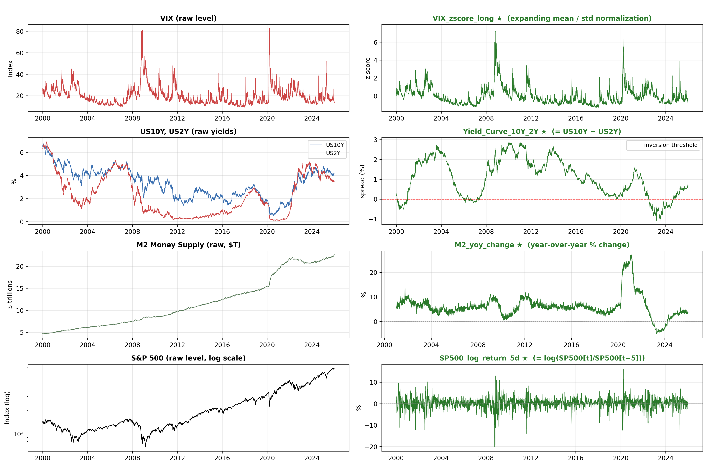
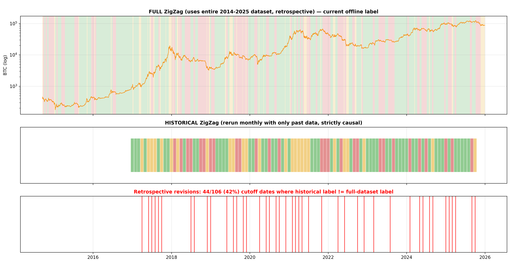
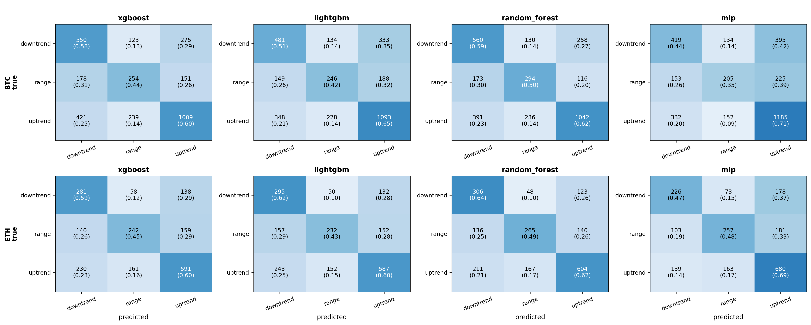
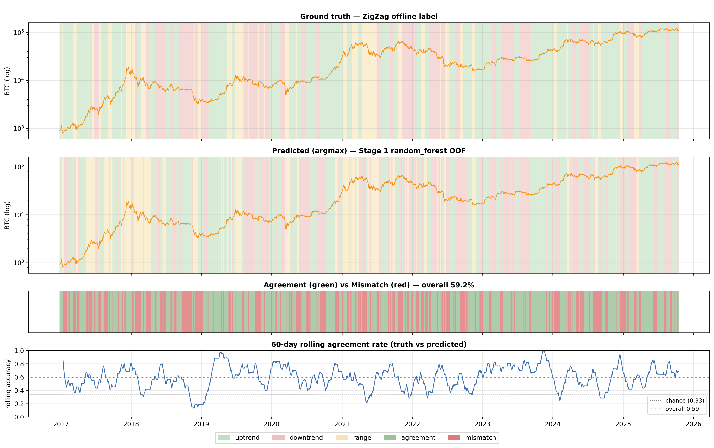
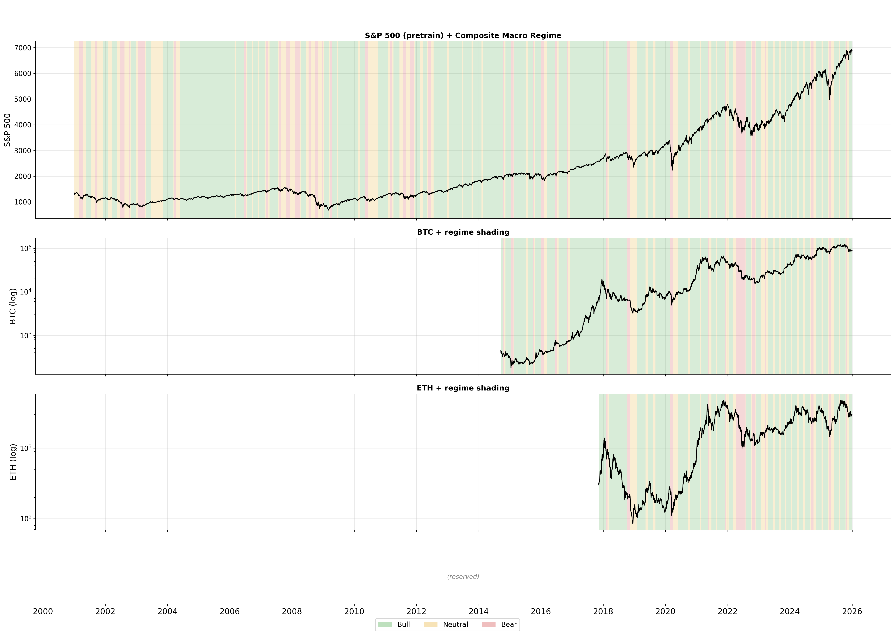
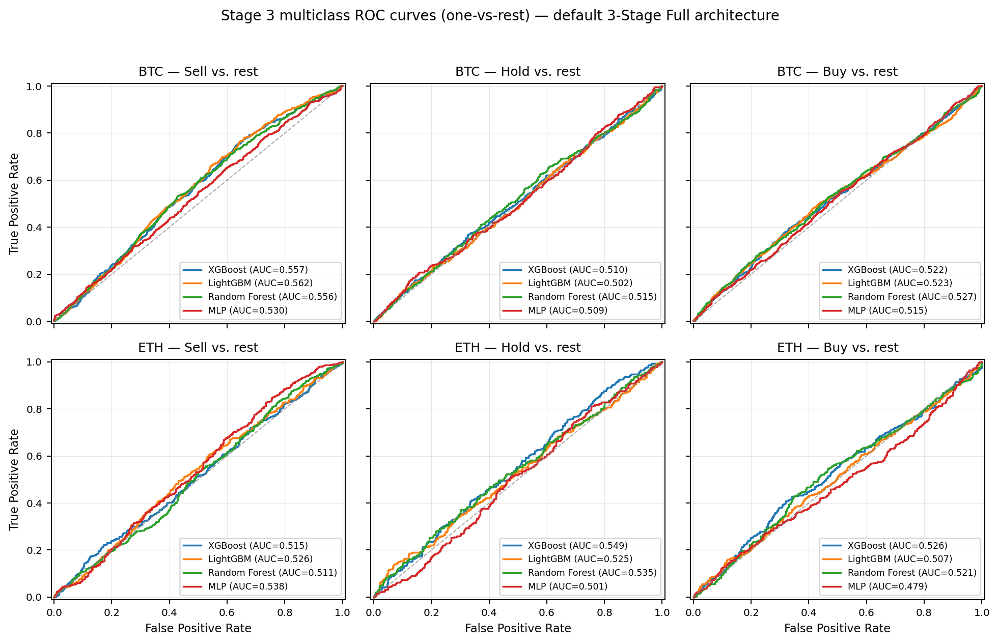
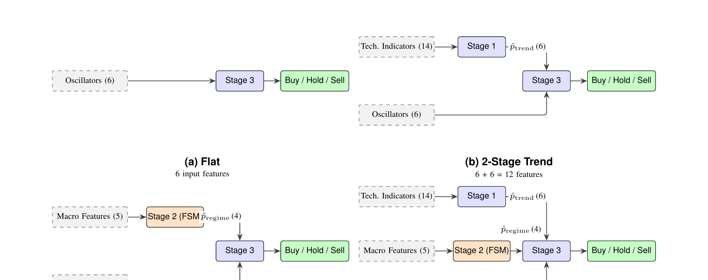
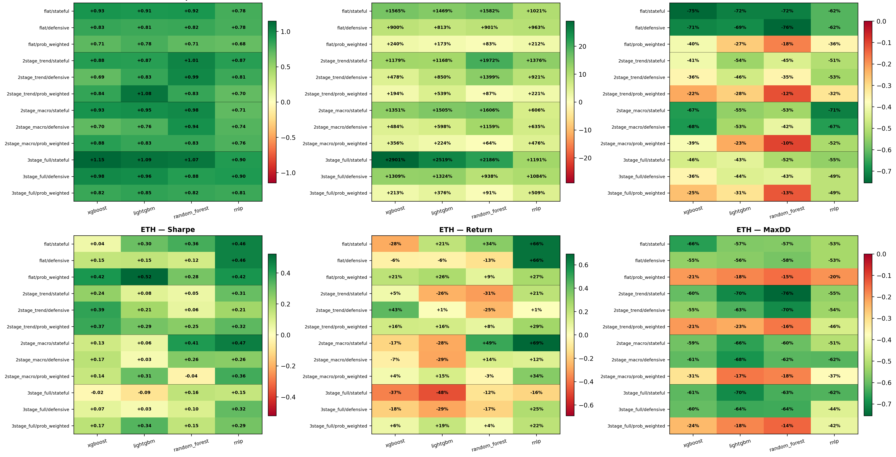
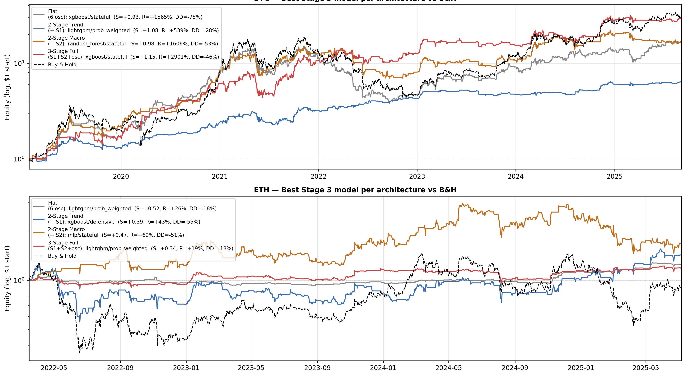

0Önerilen Rol Dağılımı (3 Kişi, İsimsiz)
Sunum yaklaşık 15 dakika (5 dk × 3 kişi) + canlı demo + soru-cevap. Aşağıdaki üç rol, projenin teknik derinliğine ve doğal "sahibi olunması gereken" parçalarına göre bölünmüş. Roller arası geçişler doğal olur çünkü her rol bir öncekinin çıktısı üzerine kurulur.
Rol A — Veri & Trend Sunan ~%30
- Section II.A — Dataset Description
- Section II.D — ZigZag-Labelled Trend Classifier (Stage 1)
- Section IV.A — Stage 1 Sonuçları
- BTC ve ETH için OHLCV (Open / High / Low / Close / Volume — günlük açılış-yüksek-düşük-kapanış-hacim) + 22 makro değişken nasıl çekildi.
- Lookahead bias (modelin tahmin sırasında geleceği bilmesi durumu — sahte yüksek skor üretir) nasıl önlendi.
- ZigZag etiketleme + retrospektiflik kanıtı.
- 14 teknik özellik, 4 model, neden Random Forest kazandı.
fig_eng_demo, fig_zigzag_lookahead, fig_stage1_confusion, fig_stage1_truth_vs_pred_btcRol B — Mimari & Soft-Fusion Sunan ~%40
- Section II.B — Three-Stage Architecture (Eq. 1–4)
- Section II.C — Stage 2 Composite Macro FSM (Finite State Machine — sonlu durumlar + aralarında deterministik geçiş kuralları olan sistem)
- Section II.E — Classifiers (4 model varsayımları)
- Section IV.B — Stage 3 Sonuçları
- Soft fusion (hard label yerine olasılık vektörü kullanmak — belirsizlik bilgisi korunur) mantığı.
- Niye Stage 2 öğrenmez? Unsupervised denemelerin başarısızlık sebebi.
- 16 boyutlu Stage 3 özellik vektörü kırılımı.
- 4 model varsayımı karşılaştırması.
fig_arch_diagram, fig_stage2_fsm, fig_stage3_roc_curvesRol C — Deney, Ablation & Demo Sunan ~%30 + demo
- Section III — Experimental Setup (walk-forward CV (Cross-Validation — zaman-sıralı doğrulama; train hep test'ten önce), Optuna (Bayesian hyperparameter optimization kütüphanesi))
- Section IV.C — Architecture Ablation (EN KRİTİK SLIDE)
- Section IV.D — Trading Rules
- Section V — Discussion (asset-specific finding)
- System Component — Docker + FastAPI (modern Python web framework, async + type-hint native) canlı demo
- 4 mimari × 4 model × 2 asset = neden bu kombinasyon.
- BTC ⇄ ETH zıt sonuç → no-free-lunch yorumu.
- Hold sınıfı = "risk filtresi" → düşük F1m (macro-averaged F1; sınıflar arası dengeli ortalama, 0–1) ama yüksek Sharpe (Sharpe Ratio = risk-adjusted yıllık getiri; >1 iyi) nasıl olur.
- Canlı demo:
docker-compose up→ BTC + 3-Stage + Stateful → Sharpe 1.15.
fig_arch_heatmap, fig_arch_equity, demo ekranı⌘Pipeline Tek Bakışta
🟦 Rol A bölgesi · 🟪/🟩 Rol B bölgesi · 🟧 Rol C bölgesi
1Niye Bu Problemi Seçtik?
BTC ve ETH gibi kripto paralarda her gün için AL / SAT / BEKLE üç sınıflı bir karar problemimiz var.
Sorun: Kripto fiyatları çok gürültülü. Klasik "tek model — tüm özellikler — direkt karar" yaklaşımı (flat baseline) ezbere kaçıyor, yeni rejimlerde patlıyor.
Çözüm fikri: Kararı parçalara ayır. Önce fiyat trendi nedir? Sonra makro ortam nedir? (resesyon mu, boğa mı?) En sonunda bu duruma göre AL/SAT/BEKLE? Her aşama daha kolay bir alt-problem.
Sunum cümlesi: "Tek model her şeyi öğrensin diye zorlamak yerine, problemi mantıklı parçalara böldük. Her parçayı ayrı bir uzman eğitti, sonra birleştirdik."
2Veri Toplama (Phase 1)
Kaynak
| Veri | Nereden | Açıklama |
|---|---|---|
| BTC OHLCV (günlük) | Yahoo Finance | 2014-09-17 → 2025-12-30, 4.094 gün |
| ETH OHLCV (günlük) | Yahoo Finance | 2017-08-17 → 2025-12-30, 3.060 gün |
| 22 makro değişken | Yahoo + FRED (Federal Reserve Economic Data — ABD merkez bankası açık veri portalı) API | S&P 500, VIX (Volatility Index — S&P 500'den türetilen 'korku endeksi'), DXY (US Dollar Index — doların 6 büyük para birimine karşı sepeti), Altın, Petrol, US10Y (10 yıllık ABD devlet tahvili faizi), US2Y (2 yıllık ABD devlet tahvili faizi), FedFunds (Federal Funds Rate — ABD politika faizi), CPI (Consumer Price Index — tüketici enflasyon endeksi), M2 (geniş para arzı: nakit + vadeli mevduat), vs. |
Önemli detay: "Publication-release lag"
FRED'den gelen aylık makro veriler (CPI, FedFunds, M2) gerçekte yayınlandığı tarihte kullanılır, tarihinde değil. Örnek: Ocak 2024 CPI verisi 13 Şubat'ta yayınlanır. Modelin 13 Şubat'tan önce o veriyi görmemesi lazım — yoksa lookahead bias olur.
Çözüm: Her veriye yayınlama gecikmesi ekledik (FedFunds 1 gün, CPI 45 gün, M2 14 gün, vs.).
Özellik mühendisliği (12 türetilmiş makro özellik)
- VIX → expanding-window z-score ((değer − ortalama) / standart sapma — 'kaç sigma uzakta') (kaç sigma yukarda?)
- US10Y − US2Y → yield curve spread (resesyon göstergesi)
- M2 → YoY (Year-over-Year — bir önceki yılın aynı dönemine göre yüzde değişim) % change
- S&P 500 → 5-günlük log return

3Stage 1 — Trend Classifier (Rol A)
Etiket nereden geliyor? — ZigZag algoritması
Sadece kapanış fiyatlarına bakarak "şu an uptrend mi, downtrend mi, range mı?" sorusuna retrospektif cevap üretir:
- Fiyat serisinde tepe ve dipleri bul (pivot noktalar).
- İki pivot arası segment %10'dan fazla hareket etmişse o segmenti
uptrendveyadowntrendolarak işaretle. - Daha az ise
range. - Minimum segment uzunluğu 15 gün.
Cevap: Etiket ileriye bakıyor evet, ama modelin gördüğü özellikler (RSI (Relative Strength Index — 14-gün momentum osilatörü, 0–100; >70 aşırı alım, <30 aşırı satım), MACD (Moving Average Convergence Divergence — iki üstel ortalamanın farkı, trend yön/güç göstergesi), ADX (Average Directional Index — trendin gücünü ölçen 0–100 osilatör), vs.) sadece o güne kadar olan veriden hesaplanıyor. Model sadece "bu causal özellikler hangi etikete denk geliyor?" eşleşmesini öğrenir.
Bunu kanıtlamak için lookahead testi ürettik: 106 farklı tarihte ZigZag'i o günün verisiyle yeniden hesapladık. 42'sinde sonuç orijinal etiketten farklı çıktı. Yani ZigZag etiketi gerçekten retrospektif — bu yüzden ML modeli şart, kural-tabanlı kullanılamaz.

4 model, 14 özellik
- Özellikler: RSI(14), MACD signal-diff (12-26-9), ADX, BB (Bollinger Bands) %B, ATR (Average True Range — gerçek aralıkların 14-gün ortalaması, volatilite), hacim z-skoru, OBV (On-Balance Volume — kümülatif yön-ağırlıklı hacim), 6 farklı pencereli log return — toplam 14.
- Modeller: XGBoost (regülerizasyonlu gradient-boosted decision trees), LightGBM (Microsoft'un leaf-wise gradient-boosted trees, hızlı + bellek-verimli), Random Forest (çok sayıda karar ağacının bagging ile birleştirilmesi), MLP (Multi-Layer Perceptron — feed-forward yapay sinir ağı).
- Sınıflar: downtrend / range / uptrend.
- Sınıf dengesi (BTC):
📊 BTC Stage 1 etiket dağılımı — uptrend baskın çünkü BTC çoğu zaman boğa modunda. Bu yüzden
class_weight='balanced' kullanıldı.
Sonuç
Random Forest hem BTC'de (F1m=0.563) hem ETH'de (F1m=0.571) en iyisi. AUC (Area Under ROC Curve — sıralama kalitesi; 0.5 chance, 1.0 mükemmel) 0.74–0.76.


Sunum cümlesi (Rol A): "ZigZag bize 'gerçeği' söyleyen retrospektif bir etiket. Modeli causal teknik göstergelerle eğitiyoruz, model bu göstergelerle şu anki trendi tahmin etmeyi öğreniyor."
4Stage 2 — Macro Regime FSM (Rol B, kuralcı)
Burada öğrenilmiş model YOK. Bunu özellikle vurgulayacağız çünkü bu bilinçli bir tasarım kararı.
Niye unsupervised başarısız oldu?
- Vanilla K-Means — 2008 GFC (Global Financial Crisis — 2007-2009 küresel finansal kriz)'i bir cluster yapamadı.
- Semantic constrained K-Means — gürültülü, hızlı rejim değişimleri ürettiyor.
- HMM (Hidden Markov Model — gözlenemeyen state'leri Markov geçiş matrisiyle modelleyen olasılıksal yöntem) (3 Gaussian state) — geçiş olasılıkları kararsız.
- 3-bileşenli GMM (Gaussian Mixture Model — K Gauss dağılımının ağırlıklı toplamı) — 2024-2025'te P(Stress) ≈ 0.96'ya saplanıp orada kalıyor.
Çözüm: Deterministic FSM (8 kural + 1 guard)
3 sınıf: Bear / Neutral / Bull.
- VIX hysteresis: Bear'a giriş VIX z-skoru > 1.0, çıkış z < 0.3 (asimetrik).
- Min dwell: Bear ≥ 20 gün, Bull ≥ 40 gün, Neutral ≥ 10 gün.
- Bear→Neutral velocity: ΔVIX_z[10gün] < -0.8 ise Bull'a hızlı geçiş.
- Persistent yield curve inversion: 60-gün rolling US10Y−US2Y < 0 → Bear sinyali.
- DXY+M2 macro stress: DXY z[30] > 0.7 VE M2 YoY < %4 → Bear override.
- Bull velocity entry: V-shape recovery'de hızlı Bull girişi.
- Bear velocity entry: Hızlı escalation.
- Bear re-entry guard: Bear'dan Neutral'a çıktıktan sonra 35 gün Neutral'da kal.
Sonuç
2008 GFC'yi, 2018-Q4 düşüşü, 2020-COVID, 2022 ayı piyasası, 2025-04 tarife şoku — hepsini doğru Bear olarak işaretledi. 2009 V-recovery, 2020 V, 2025-05 toparlanma — hepsi Bull.

Sunum cümlesi (Rol B): "Unsupervised yaklaşımlar makro rejimi yakalayamadı çünkü etiketli veri yok ve clustering 2008 gibi kritik olayları kaçırıyor. Bu yüzden 8 kurallı bir finite-state machine tasarladık — finansta makro rejim zaten heuristic ile tanımlanır."
Cevap: "Stage 2 modelimiz öğrenmiyor ama çıktısı (Bull/Neutral/Bear posterior'u) Stage 3'e ML özelliği olarak giriyor. Hibrit pipeline. Hamilton 1989, Ang & Bekaert 2002 gibi makaleler de Markov-switching ile aynı mantığı yapıyor, biz deterministik kuralları tercih ettik."
5Stage 3 — Signal Classifier (Rol B, esas iş)
Burası kalbi. Stage 1 ve Stage 2'nin çıktılarını soft fusion ile birleştirip AL/SAT/BEKLE kararı veriyor.
Etiket nereden geliyor? — Adaptif eşik
Forward 5-günlük getiri kullanıyoruz:
y_t = Buy eğer (P_{t+5} - P_t) / P_t > +0.5 × σ_t
y_t = Sell eğer (P_{t+5} - P_t) / P_t < -0.5 × σ_t
y_t = Hold diğer durumdaBurada σ_t = son 20 günün causal standart sapması (ileriye bakmaz). Niye 0.5 sigma? k=0.5 değerinde sınıflar dengeli (%43 Buy / %23 Hold / %34 Sell).
4 model
Yine XGBoost, LightGBM, Random Forest, MLP — Stage 1 ile aynı 4 model.
Sonuç (default 3-Stage Full mimari)
- BTC en iyi: XGBoost, F1m = 0.367, AUC = 0.530
- ETH en iyi: XGBoost, F1m = 0.368, AUC = 0.530
F1=0.37, AUC=0.53 düşük gibi gelebilir — chance %33, biz biraz üstündeyiz. Ama trading'de F1 yetmez. Sharpe iyi. Birazdan açıklanacak.


6Walk-Forward Cross-Validation (Rol C)
Niye normal K-fold değil?
Klasik K-fold zamanı karıştırır — train fold'da 2025 verisi, test fold'da 2018 verisi olabilir. Geleceği bilerek geçmişi tahmin etmek = leakage = sahte yüksek skor.
Expanding-window walk-forward
- gap = 10 gün: label horizon 5 günden büyük, leakage'ı önler.
- validation window = 200 gün.
- BTC: 16 outer fold (Stage 1) / 12 fold (Stage 3).
- ETH: 10 outer fold (Stage 1) / 6 fold (Stage 3).
Hyperparameter tuning
Her model için 30 trial, 5-fold inner CV (yine walk-forward).
İlk denemede 3-fold yapmıştık, Optuna min_samples_leaf=1 (degenerate değer) seçti ve
outer CV'de un-tuned baseline'dan kötü çıktı. 5-fold'a geçince düzeldi.
Software
Python 3.11, scikit-learn 1.8, XGBoost 3.2, LightGBM 4.6, Optuna 4.8. Hepsi tek bir MacBook Air M1'de döndü, 1 saat 43 dakika total walk-forward + tuning.
7Mimari Ablation — En İlginç Bulgu (Rol C)
Hocaya satacağımız esas hikaye burası.
4 Mimari karşılaştırdık
| Mimari | Stage 3'e ne giriyor | Toplam özellik |
|---|---|---|
| Flat | Sadece 6 oscillator | 6 |
| 2-Stage Trend | Stage 1 posterior + 6 oscillator | 6 + 6 = 12 |
| 2-Stage Macro | Stage 2 regime + 6 oscillator | 6 + 4 = 10 |
| 3-Stage Full | Stage 1 + Stage 2 + 6 oscillator | 6 + 6 + 4 = 16 |
Sonuç
| BTC | ETH | |
|---|---|---|
| Flat | Sharpe 0.93 | Sharpe 0.52 (en iyi!) |
| 2-Stage Trend | Sharpe 1.08 | Sharpe 0.39 |
| 2-Stage Macro | Sharpe 0.98 | Sharpe 0.47 |
| 3-Stage Full | Sharpe 1.15 (en iyi!) | Sharpe 0.34 |
| Buy & Hold benchmark | Sharpe 0.95 | Sharpe 0.26 |


- BTC için: Daha derin mimari → daha iyi Sharpe (monotonik artış 0.93 → 1.15).
- ETH için: Daha derin mimari → daha kötü Sharpe (0.52 → 0.34).
Sunum cümlesi (Rol C): "İlk başta 3-stage'in her varlık için iyi olacağını düşündük. Ablation çalışmamız BTC için doğru olduğunu, ETH için tersinin olduğunu gösterdi. Bu finansal ML'de no-free-lunch'ın somut bir örneği — veri büyüklüğü mimari kararını etkiler."
8Trading Rules — F1 Düşük Olsa da Sharpe Yüksek (Rol C)
Stage 3 modeli AL/SAT/BEKLE olasılıkları üretiyor. Bu olasılıkları gerçek trade'lere çevirmek için 3 kural denedik:
Sonuç
- BTC: Stateful long-only kazandı (Sharpe 1.15) — test dönemi boğa-ağırlıklı.
- ETH: Probability-weighted kazandı (Sharpe 0.52) — ETH volatil, soft sizing güvenli.
Niye bu önemli?
F1=0.37 ile Sharpe=1.15 nasıl?
Cevap: Hold sınıfı risk filtresi gibi davranıyor. Model emin olmadığı günlerde Hold tahmini yapıyor → trading kuralı o gün trade etmiyor → sermayeyi koruyor. 2-sınıflı bir model bu lüksü kaybeder.
Sayı: BTC için 2.200 trading günü içinde sadece 179 trade yaptık.
Sunum cümlesi (Rol C): "F1=0.37 düşük gibi ama Hold sınıfı sayesinde model emin olmadığı günlerde abstain ediyor. Sadece güvendiği günlerde trade yapınca Sharpe 1.15'e çıkıyor."
9Backtest Detayları
- Transaction cost: %0.1 one-way (kripto spot için makul, slippage paper'da limitasyon olarak yazılı).
- Buy & Hold benchmark: aynı OOF (Out-of-Fold — CV validation tahminleri) aralığında.
- Sharpe: 252 trading günü annualization.
Final sayılar
| Sharpe | Total return | MaxDD (Maximum Drawdown — peak-to-trough en büyük düşüş; küçük olması iyi) | F1m | |
|---|---|---|---|---|
| BTC 3-Stage Full | 1.15 | +2901% | -46% | 0.367 |
| BTC Buy & Hold | 0.95 | +2972% | -77% | — |
| ETH Flat baseline | 0.52 | +26% | -18% | 0.354 |
| ETH Buy & Hold | 0.26 | −7% | -72% | — |
10Sistem (Docker + FastAPI + Web UI) — Rol C
Hocanın sistem gereksinimi: Docker container içinde FastAPI backend + HTML web UI + canlı tahmin.
Mimari
[ Browser ]
↓ HTTP (HyperText Transfer Protocol — web istek-cevap protokolü) request
[ FastAPI server (Python) ]
↓ load saved sklearn models
[ XGBoost / LightGBM / RF / MLP modelleri (pickle) ]
↓ predict
[ Chart.js ile equity curve render ]Özellikler
- Web UI'de model + mimari seçilebilir (Flat / 2-Stage / 3-Stage / vs.)
- Trading kuralı seçilebilir (stateful / defensive / probability-weighted)
- Canlı equity curve, trade marker'ları ile (yeşil = entry, kırmızı = exit)
- Tüm OOF prediction'lar Docker image içine bundle'lanmış — sunum sırasında network olmadan çalışır.
Sunum demosu (Rol C sorumluluğunda)
docker-compose upile başlat- Browser'da http://localhost:8000 aç
- BTC seç, 3-Stage Full seç, Stateful kural seç → Sharpe 1.15 + equity curve render
- ETH'e geç, Flat baseline seç → B&H'ı yener, Sharpe 0.52
11Paper'da Hocanın İstediği Kriterler
| Kriter | Bulunduğu yer |
|---|---|
| Title + 3 yazar | Page 1 başı |
| Abstract (150-250 kelime, no cite/eq/fig) | Page 1, 210 kelime |
| Introduction + 10+ academic ref | Page 1-2, 24 ref |
| Dataset description | Tablo I |
| Mathematical formulation | Eq (1)-(4), Section II.B |
| Model description + assumptions | Section II.E |
| Experimental setup (CV, HP tuning, software, metrics) | Section III |
| Confusion matrix | Fig. 4 paper'da (Stage 1 × 8 panel) |
| ROC curves | Fig. 6 paper'da (Stage 3 × 6 panel) |
| Method comparison | Tablo II, III, IV |
| Conclusion | Section VI |
| References (IEEE (Institute of Electrical and Electronics Engineers — yayın formatı) format) | Page 8 |
| Author contributions | Sayfa 7 |
12Sıkça Beklenen Sorular (FAQ)
S: "Niye sadece XGBoost değil, 4 model birden?"
C: Pattern recognition coursework açısından farklı algoritma ailelerinin (boosting, bagging, neural net) karşılaştırması bekleniyor.
S: "Niye sadece BTC ve ETH? Daha fazla coin niye yok?"
C: Coursework scope. 2 asset zaten zengin bir karşılaştırma sağlıyor (no-free-lunch bulgusunu çıkardı).
S: "Buy & Hold zaten %2972 yapmış, sizin %2901, daha düşük. Niye başarılı?"
C: Sharpe önemli, total return değil. B&H Sharpe 0.95, biz 1.15. MaxDD bizimki -%46 (B&H -%77). Risk-adjusted return ve drawdown kriptoda total return'den önemli.
S: "Stage 2 FSM 'ML' değil. Bu pattern recognition projesi olmuş mu?"
C: Evet. Stage 1 ve 3 ML, soft fusion mantığı kendisi pattern recognition çekirdek konusu (Jordan & Jacobs hierarchical mixture of experts, 1994). FSM bir özellik mühendisliği tekniği.
S: "k=0.5 niye, başka değer denemediniz mi?"
C: Denedik (k ∈ {0.4, 0.5, 0.7, 1.0}). Tree-based modellerde k=0.5 her ikisi için optimum.
S: "ROC-AUC 0.53, chance 0.5. İstatistiksel olarak anlamlı mı?"
C: AUC'nin chance'tan farkı küçük, McNemar testi yapmadık (paper'da limitation). Ama Sharpe 1.15 vs 0.95 farkı backtest süresi (8.7 yıl) boyunca ekonomik olarak anlamlı.
S: "Forward returns kullandın etiket için. Lookahead bias değil mi?"
C: Etiket ileriye bakar (her supervised time-series probleminde böyle), özellik asla bakmaz. assert_no_lookahead_leakage rutini bunu kod tarafında doğrular.
13Sunumdan Önce Yapılacaklar
- ☐ Docker container build ve demo dry-run (Rol C)
- ☐ Browser'da web UI'nin çalıştığını doğrula
- ☐ BTC ve ETH için Sharpe sayılarının doğru render edildiğini gör
- ☐
docs/paper/paper.pdfson halini PDF olarak yazdır veya tablete kopyala - ☐ PowerPoint slidedeck (10 slide max):
- Problem (Rol A)
- Hierarchical decomposition (mimari diyagram) (Rol A → B geçiş)
- Stage 1 — ZigZag + 4 model (Rol A)
- Stage 2 — FSM (Rol B)
- Stage 3 — Soft fusion + 16 boyutlu vektör (Rol B)
- Walk-forward CV (Rol C)
- Architecture ablation (en kritik slide) (Rol C)
- Trading rules + Sharpe 1.15 vs 0.95 (Rol C)
- Asset-specific finding (BTC vs ETH) (Rol C)
- Demo screen + thank you (Rol C)